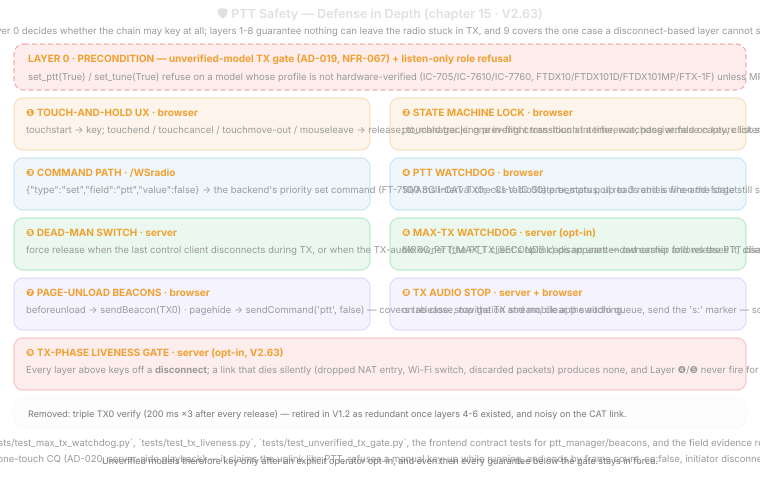

15. PTT Safety Architecture (ART 0535)
Principle: Release is more safety-critical than keying. A lost PTT release command can leave a radio transmitting indefinitely — causing harmful interference, overheating the radio, and violating spectrum regulations. Every layer must have an independent path to force RX.
15.1 Safety Model — Defense in Depth
The MRRC Modern PTT safety architecture provides 7 independent layers of defense against stuck-TX scenarios for all supported radio backends, preceded by a configuration precondition (Layer 0) that decides whether the chain may key the radio at all.
| Layer | Location | Mechanism | Failure Mode Caught |
|---|---|---|---|
| 0 | Server (backend, precondition) | Unverified-model transmit gate: set_ptt(True)/set_tune(True) refuse unless MRRC_ALLOW_UNVERIFIED_TX=1; PTT releases are never gated |
Keying a radio whose CAT semantics are documentation-derived rather than measured (AD-019) |
| 1 | Browser UX | Touch-and-hold: release on mouseup/touchend/mouseleave/touchcancel |
User intentionally releasing PTT |
| 2 | Browser → Server | sendCommand('ptt', false) over /WSradio |
Normal network path |
| 3 | Browser | PTT Watchdog: 500ms interval checks radioState.tx_status; up to 3 retries |
TX0 command or state broadcast lost |
| 4 | Server | Dead-man switch: force TX0; when the last control client disconnects during TX, or when the TX-audio owner disconnects during TX. Uplink ownership follows the PTT-ing client (token-matched on key-up, and because one session token is a 30-day cookie the match is resolved to the last-connected socket of that session, never to an arbitrary one), a same-session replacement audio socket supersedes a half-open page-reload socket, a same-session socket that is actually streaming takes the uplink over on its first frame, and a different session cannot steal merely by connecting or by streaming; owner disconnect promotes a remaining client |
Browser crash, tab close, network loss, audio socket drop, multi-client ownership |
| 5 | Browser | beforeunload → navigator.sendBeacon() with TX0 |
Tab/browser close during TX |
| 6 | Browser | pagehide → sendCommand('ptt', false) |
Mobile app switch / backgrounding |
| 7 | Server + Browser | Stop TX audio stream; clear audio queue; wsAudioTX.send('s:') |
Audio continuing to feed radio after release |
| 8 | Server | One-shot CQ call (AD-020): server-side player keys, plays the packaged recording once, then drains and unkeys (stop_tx(graceful=True) → set_ptt(False)). Aborts immediately on cq:false, initiator disconnect, last-client disconnect, external unkey (watchdog/TUNE), or shutdown |
Automated transmission with no operator finger on PTT — every call has a definite end |
Removed layer — Triple TX0 Verify (removed in V1.2, 2026-07-08): earlier releases queried TX; three times at 200ms intervals after every release and re-sent TX0; on non-zero. This added ~600ms to every release, and field observation showed the radio obeys TX0; on the first write (fire-and-forget). Stuck-keyup detection is now covered by the server-side TX-status poll (500ms) feeding the browser PTT watchdog (Layer 3).

15.2 Layer Details
Layer 0 (V2.41, extended V2.46): unverified-model transmit gate. Before any of the layers below can key the radio, the active backend’s set_ptt(True)/set_tune(True) refuse when the model profile is not hardware-verified (IC7300Backend for IC-705/IC-7610/IC-7760, YaesuBackend for FTDX10/FTDX101D/FTDX101MP/FTX-1F/FT-891) unless MRRC_ALLOW_UNVERIFIED_TX=1 is set; the refusal is logged once per process and PTT releases are never gated, so the layers below can always unkey. See AD-019.
Layer 1: Touch-and-Hold UX
PTT only transmits while the user is actively touching the PTT button:
pttBtn.addEventListener('mousedown', handlePTTStart);
pttBtn.addEventListener('touchstart', function(e) { e.preventDefault(); handlePTTStart(); });
pttBtn.addEventListener('mouseup', handlePTTEnd);
pttBtn.addEventListener('touchend', function(e) { e.preventDefault(); handlePTTEnd(); });
pttBtn.addEventListener('mouseleave', handlePTTEnd);
pttBtn.addEventListener('touchcancel', handlePTTEnd);Layer 2: Normal WebSocket Command
function handlePTTEnd() {
sendCommand('ptt', false);
// ...
}Server receives {"type":"set","field":"ptt","value":false} → sends the backend-specific PTT unkey command (FT-710 CAT TX0;, IC-7300/MK2 CI-V 0x1C 0x00 unkey) fire-and-forget (see removal note in §15.1).
Layer 3: PTT Watchdog (Browser)
// ptt_manager.js
pttVerifyTimer = setInterval(function() {
if (!pttActive && !tuneActive) {
if (radioState.tx_status !== 0) {
retries++;
sendCommand('ptt', false);
if (retries >= 3) {
// Force locally
radioState.tx_status = 0;
radioState.is_transmitting = false;
renderPTTState();
renderStatusBar();
stopPTTWatchdog();
}
} else {
stopPTTWatchdog();
}
}
}, 500);The watchdog’s input is the server-side TX-status poll (500ms), which keeps radioState.tx_status fresh even if the release command’s state update was lost. The same ownership/dead-man logic applies to the IC-7300/MK2 backend, where PTT key/unkey is sent as CI-V 0x1C 0x00 frames.
Cross-client false positive (fixed 2026-09-25, SDD I6 PTT half): the watchdog cannot tell “my release did not land” from “another client just keyed” — with two tabs open, the idle tab’s watchdog re-sent ptt:false on the other tab’s key-up and unkeyed the live transmission (field log: 75 TX sessions in 5 minutes, 16 with zero mic frames, three releases 30 ms apart). Two layers now stop this: the server ignores a release from any socket that is not the current keyer (_ptt_key_ws, Layer 4b) and pushes the authoritative tx_status back with ptt_keyed_by_other: true; on that flag the browser calls PTTManager.cancelWatchdog() and stands down instead of retrying.
Layer 4: Dead-Man Switch (Server)
# In /WSradio disconnect handler:
if not ctrl_clients and radio.is_transmitting and backend and backend.connected:
logger.warning("Last client disconnected during TX! Forcing RX.")
await backend.set_ptt(False)
radio.update(tx_status=0)
if audio:
audio.stop_tx()Uplink ownership is per socket, but a session token is not (fixed 2026-10-05, SDD I6 uplink half): the token is a 30-day cookie, so ONE browser session can hold several /WSaudioTX sockets at once — a page reload leaves its predecessor half-open for tens of seconds, and two tabs of one login share the token outright. _claim_tx_owner_for_token() resolved that token by taking the first match scanned out of audio_tx_clients, a set, so the key-up claim was decided by iteration order. Field log 2026-10-05 on a hub instance: the claim landed on the dead predecessor, TX audio ownership → PTT client was logged as usual, and the reloaded page’s every mic frame was then dropped as non-owner — frames=0 non_owner_drops=236, peak=0% (a keyed carrier with no modulation) for 58 s, until the stale socket was reaped and _promote_tx_owner() handed the uplink to the survivor (frames=78 written=72 peak=99%). Two layers now:
- Deterministic claim —
_register_tx_socket()records each socket’s connect order and the key-up claim takes the last-connected socket of that session, which is what “a same-session replacement audio socket supersedes a half-open page-reload socket” always meant; a first-match scan only ever satisfied it by luck. - Streaming takeover —
_same_session_uplink_takeover()hands the uplink to a non-owner socket whose token equals the owner’s, on the first frame it actually streams. This covers the case a connect-time rule cannot: two same-session sockets that are both live, where the operator happens to work in the one that connected first. Self-heals within one 20 ms frame instead of muting the whole transmission.
A different session still cannot steal an active uplink — neither by connecting (_assign_tx_owner_on_connect) nor by streaming at it — because interleaving two microphones into one playback queue is exactly what the single-owner guard exists to prevent. Ownership moving away from a socket also keeps the dead-man switch correct: the finally block only forces RX when the socket that disconnects is the owner (TXUplinkOwnershipTests).
ATR1000 tune assist (server-side TX2 keying): the optional ATR tune assist (_atr_tune_assist(), §9.8) keys a TX2 carrier server-side for up to 45 s (ATR_TUNE deadline). Safety: the carrier drop is guaranteed by a finally block on every exit path (skip/success/rollback/error); the Layer 4 last-client-disconnect dead-man switch still applies while the carrier is up; an SWR≤1.6 gate skips tuning entirely; relays roll back when SWR does not improve. All ATR I/O runs in its own asyncio task — never on the audio path.
Layer 4b: Control-Plane PTT Arbitration (Server)
The TX-audio uplink has had a single owner since V2.4x; the control plane did not — any full-control client could send ptt:false at any time (last-writer-wins, SDD I6). Since 2026-09-25 the socket that sends ptt:true is recorded as _ptt_key_ws, and while it holds the key:
# /WSradio "set ptt" handler:
if not _ptt_release_allowed(ws): # ws is not the keyer
# ignore the release, push the authoritative state back:
await ws.send_text(json.dumps({
"type": "stateUpdate",
"fields": {"tx_status": radio.tx_status},
"dirty": ["tx_status"],
"ptt_keyed_by_other": True, # browser watchdog stands down
}))
return- A key-up from any client is still honored (takeover by re-keying), and the keyer’s own release always passes — the stuck-keyup retry path (Layer 3) is untouched.
_ptt_key_wsis cleared on every server-initiated unkey: normal release, audio-open-failure unkey,MRRC_PTT_MAX_TX_SECONDSwatchdog, /WSaudioTX owner-disconnect force-RX.- Zombie keyer: when the keying control socket disconnects mid-TX the server forces RX immediately — even with other clients still connected (they are not the keyer, and their releases are exactly what the arbitration ignores). Mirrors the /WSaudioTX owner rule.
- Trade-off: while a keyer is connected but unresponsive (browser frozen, socket alive), other clients cannot unkey it; the coverage is the keyer-disconnect rule, the Layer 4 dead-man, and the opt-in
MRRC_PTT_MAX_TX_SECONDSwatchdog. - Tests:
PTTControlArbitrationTests(tests/test_server_ws_protocol.py).
ATR1000 auto full tune (no self-keying): the high-SWR guard (atr1000_client.py, §9.8 behaviour 4) never keys the radio — it only acts while the operator is already transmitting (measured power ≥5 W) and emits nothing but an ATR-1000 tune frame; atr1000_client.py holds no CAT/PTT reference at all (a source-level test pins this). The manual assist’s TX2 carrier path above is unchanged and remains the only ATR-initiated keying, with its finally drop rule.
Layer 5: Beforeunload Beacon
window.addEventListener('beforeunload', function() {
if (pttActive || tuneActive) {
if (navigator.sendBeacon) {
const blob = new Blob([
JSON.stringify({type:'set', field:'ptt', value:false})
], {type: 'application/json'});
navigator.sendBeacon('/WSradio', blob);
}
}
});Layer 6: Pagehide Handler
window.addEventListener('pagehide', function() {
if (pttActive || tuneActive) {
sendCommand('ptt', false);
}
});Layer 7: TX Audio Stream Stop
Server-side on PTT release:
if audio:
audio.stop_tx()Browser-side on PTT release:
function stopTXAudio() {
txAudioRunning = false;
// ...
if (wsAudioTX && wsAudioTX.readyState === WebSocket.OPEN) {
wsAudioTX.send('s:'); // Flush server TX queue
}
}Layer 8: Server-Side CQ Call (AD-020)
The CQ key transmits without a human holding PTT, so it is the one path where “the operator lets go” cannot be the safety net. Instead the player is the safety net:
- The call is a single finite asset (<= 30 s guard) played once; the player knows the frame count, so
completeis reached by arithmetic, not by a timer. - While it runs, a manual key-up (PTT), a second CQ start, and TUNE are all refused — one carrier, one source.
- Any external release of the carrier (
MRRC_PTT_MAX_TX_SECONDSwatchdog, TUNE, another client, dead-man switch) is observed throughradio.is_transmittingand ends the call asaborted/unkeyed. - The initiator’s disconnect aborts immediately (
reason:"client_gone"), never leaving a bystander’s carrier on the air. cq:falsecuts the tail (no graceful drain) because the operator asked to stop now; a natural end drains gracefully so the last syllable is not chopped.
15.3 Safety Flow Diagram
Normal Release Path:
PTT Button Release (any trigger)
→ handlePTTEnd()
→ sendCommand('ptt', false) [Layers 1+2]
→ stopTXAudio() + wsAudioTX.send('s:') [Layer 7]
→ Server: backend-specific PTT unkey command (fire-and-forget)
→ Server: TX-status poll (500ms) tracks RX
→ PTT Watchdog starts [Layer 3]
Emergency Paths:
Browser crash / tab close:
→ beforeunload → sendBeacon PTT=false; [Layer 5]
→ pagehide → sendCommand PTT=false; [Layer 6]
→ WS disconnect → server dead-man switch [Layer 4]
→ Server stops TX audio [Layer 7]
Network loss during TX:
→ WS disconnect → server dead-man switch [Layer 4]
→ Server stops TX audio [Layer 7]
→ Radio returns to RX (protocol timeout)15.4 Testing the Safety Layers
| Test | Expected Behavior | Layers Tested |
|---|---|---|
| Normal PTT press/release | TX → RX within 200ms | 1, 2 |
| Force-close browser during TX | Radio returns to RX | 4, 5, 6 |
| Network packet loss during release | Browser watchdog re-sends ptt=false (state via 500ms TX-status poll) |
3 |
| Tab background on iOS during TX | pagehide sends TX0 | 6 |
| Multiple rapid PTT toggles | Each release properly processed | All |
| Pull USB cable during TX | No software path can reach the radio; server marks CAT disconnected and forces RX state on reconnect | — (hardware) |
| Server kill -9 during TX | Radio returns to RX (CAT timeout, no polling) | Hardware |
15.5 Safety Design Principles
- Release is more important than keying. Every release path must work even if the keying path is broken.
- No single point of failure. 7 independent layers catch different failure modes.
- Fail safe, not fail dangerous. If in doubt, force RX.
- Server has final authority. Even if the browser is completely gone, the server forces RX (Layer 4).
- Verify, don’t assume. TX state is read back continuously via the 500ms TX-status poll, and the browser watchdog acts on any stuck-TX indication (Layer 3). The per-release triple readback was removed in V1.2 — see §15.1.
- Stop audio before RF. Audio stream stops before the RF carrier drops, preventing hot-switching noise.
15.6 Hub-mode extension (planned, NOT implemented)
V2.62 由
mrrc_hub（MRRC Cloud Hub）SDD V0.1 的评审引入，记录一个原先未覆盖的失效模式； V2.63 已实现（opt-in），见本节末的”实现”段。设计细节见mrrc_hub/SDD/15-ptt-safety-hub-mode.md（AD-H06 的来源），两侧以 V1–V10 注入矩阵对齐。
缺口：Layer 4 的 dead-man switch 只在 WebSocket 真正断开时触发。源码注释（server.py）已明确：
Opt-in stuck-keyup watchdog (MRRC_PTT_MAX_TX_SECONDS, 0 = off). Covers clients that hang WITHOUT disconnecting — the dead-man switch and client watchdogs never fire for a zombie-but-connected socket.
且该兜底默认关闭（config.py：_env_float("MRRC_PTT_MAX_TX_SECONDS", 0.0)，检查粒度 1.0 s）。因此：
| 失效模式 | 当前是否有本地释放路径 |
|---|---|
| 关闭浏览器 / 进程退出 / TCP RST | ✅ Layer 4（立即） |
拔网线 / 换 Wi-Fi / NAT 掉表 / 静默丢弃（iptables DROP） |
❌ 无 —— TCP 未断，Layer 4 与 Layer 3 都不触发 |
| 进程卡死但仍连着 | ⚠️ 仅当 MRRC_PTT_MAX_TX_SECONDS 非零（默认 off） |
在 LAN 场景这不致命（断线 ≈ 真断线）。但在经 Hub 的远程接入场景（运营商 NAT、双层 NAT、 弱网、频繁换网）中，半开连接是主路径而非边缘；此刻租约仍在、云端 TTL 未到期 —— 即”释放 依赖云端”，而这正是远程接入设计明令禁止的。
实现（V2.63，opt-in）：MRRC_REMOTE_SESSION_TX_HEARTBEAT_S（默认 0 = 关闭）→ 服务端 _tx_liveness_timeout() + _tx_liveness_watchdog()（tick 0.25 s，检测延迟 ≤ 阈值 + 1 tick）；浏览器在 PTT/TUNE 期间每 500 ms 发 {type:"txhb"}（ptt_manager.js，起于 pttStart/tuneStart，止于 pttEnd/tuneEnd/forceRX）。三个不释放条件是故意的负例：①未声明能力的会话（旧原生客户端、自带 watchdog 的 LAN 客户端）永不被门控 —— 发 txhb 本身就是能力声明；②只有持键会话超时才释放，陈旧 Listener 不得掐掉别人的载波（Layer 4 仲裁）；③刚连上就按键、还没发过心跳的会话不算超时。释放走既有 fire-and-forget 路径（单次 set_ptt(False) + 清零 TX 表 + 告知控制面），无 verify 循环。 tests/test_tx_liveness.py 21 项覆盖上述每一条（含”单包丢失不释放”与”陈旧 Listener 不释放”）。
原计划轮廓（保留作设计对照）：
| 项 | 设计 |
|---|---|
| 新增配置 | MRRC_REMOTE_SESSION_TX_HEARTBEAT_S（默认 1.0 s，0 = 关闭） |
| 新层 | 远程会话活性层：TX 期间会话心跳缺失 ≥1.0 s → set_ptt(False) + 清 TX 音频队列 |
| 心跳节奏 | TX 期间 500 ms；隧道层连续 2 次未达（≈1.0 s）主动关流并通知（不发 TX0） |
| 仲裁 | 必须复用 Layer 4 的 key-owner 仲裁（_ptt_key_ws / _ptt_release_allowed）：不得释放别人的载波（例如 LAN 客户端正在发射时，远端 Listener 的半开不得导致释放） |
| 时限 | EOF 型 ≤ 1 s（现状已满足）；半开型 ≤ 1.5 s（新增） |
| 兜底 | Hub 模式建议 MRRC_PTT_MAX_TX_SECONDS=120 —— 语义是”最长连续发射上限”，不是释放机制 |
| 验证 | mrrc_hub/SDD/15-ptt-safety-hub-mode.md §15.5 的 V1–V10 注入矩阵（含 V8 LAN 载波不被误释放、V10 单包丢失不误释放） |
术语订正：对外文档长期写作”七层 PTT 安全释放”，本章实为 Layer 0（前置闸门）+ Layer 1–8 （Layer 0 于 V2.41 引入、V2.46 扩展；Layer 8 为 V2.49 的一次性 CQ 播放器）。以本章为准。